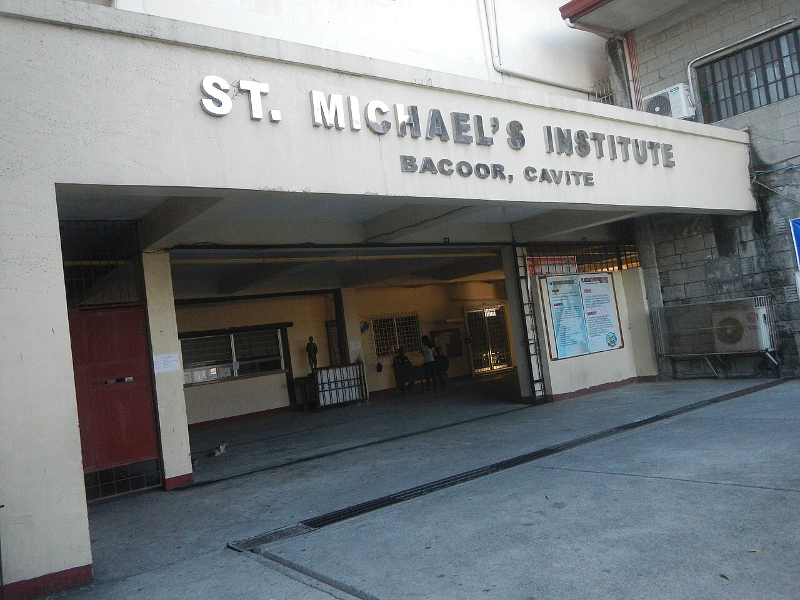
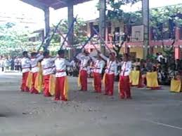

Welcome Michaelians!
St. Michael's Institute of Bacoor, Inc. is a private Catholic educational institution located in Bacoor, Cavite. It is part of the Diocese of Imus Catholic Educational System (DICES), providing values-centered education under the patronage of St. Michael the Archangel. St. Michael's Institute of Bacoor, Inc. (SMI) operates under a mission defined by "Justitia" (Justice) and "Scientia" (Knowledge). As a pillar of the Diocese of Imus Catholic Educational System (DICES), the school focuses on a Christ-centered approach to education, aiming to mold students who are not only academically competent but also deeply rooted in their Catholic faith and service to the community.

